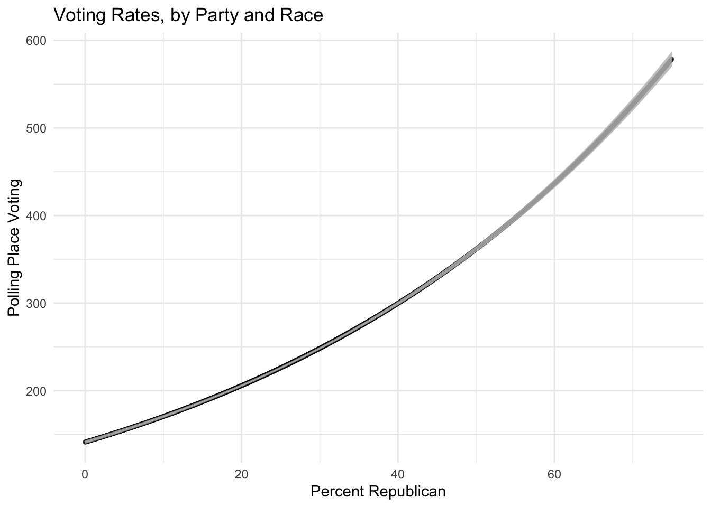
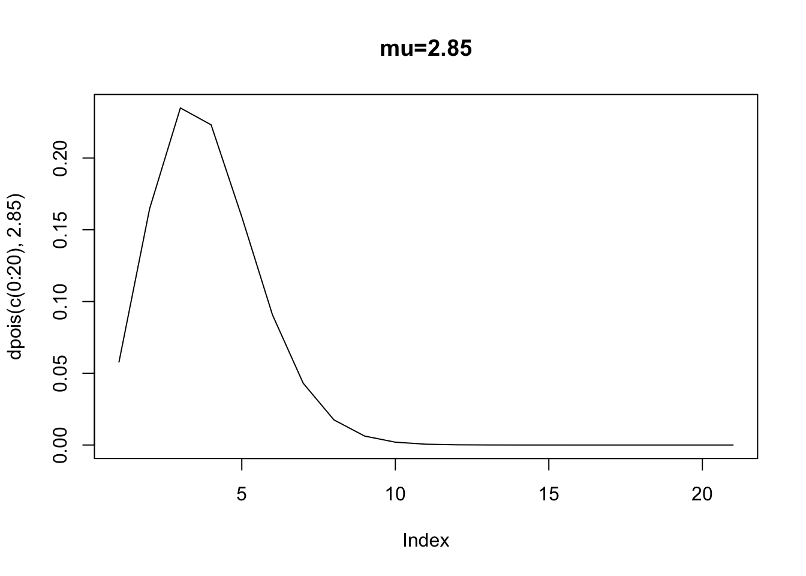
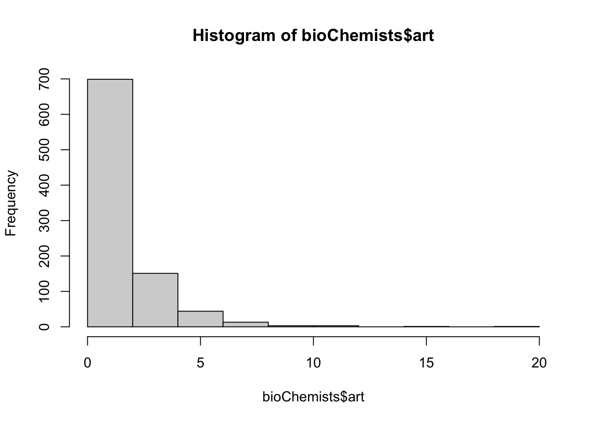
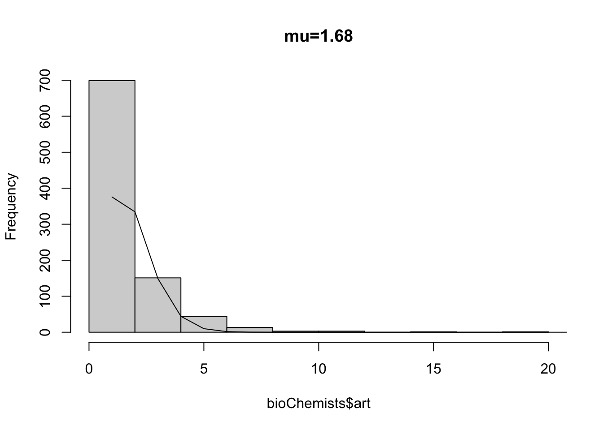

Chapter 10 Building Examples
10.1 The Poisson
Let’s start with the Poisson distribution. The Poisson distribution is a discrete probability distribution that expresses the probability of a given number of events occurring in a fixed interval. The Poisson distribution is characterized by the parameter \(\lambda\), which is the average number of events in the interval.
10.2 The Data
The data reported below are from the 2020 Western States Survey, a collaborative project of researchers form the University of Arizona, Arizona State University, the University of Utah, University of New Mexico, the University of Colorado, and the University of Nevada. In 2020, we commissioned YouGov to interview 3,577 respondents, which were matched down to a sample of 3,000, the final dataset. The data include an oversample of 600 Latinos.
- Voted: Whether the respondent voted for Donald Trump (1) or Joe Biden (0).
- Latino: Whether the respondent is Latino (1) or Non Hispanic White (0)
df %>%
filter(race == "Hispanic" | race == "White") %>%
mutate(latino = ifelse(race == "Hispanic", 1, 0))-> df ##
## Call:
## glm(formula = voted ~ 1 + latino, family = binomial("logit"),
## data = df)
##
## Coefficients:
## Estimate Std. Error z value Pr(>|z|)
## (Intercept) -0.14197 0.04935 -2.877 0.00401 **
## latino -0.68055 0.08642 -7.875 3.4e-15 ***
## ---
## Signif. codes: 0 '***' 0.001 '**' 0.01 '*' 0.05 '.' 0.1 ' ' 1
##
## (Dispersion parameter for binomial family taken to be 1)
##
## Null deviance: 3497.4 on 2587 degrees of freedom
## Residual deviance: 3433.4 on 2586 degrees of freedom
## (611 observations deleted due to missingness)
## AIC: 3437.4
##
## Number of Fisher Scoring iterations: 4df %>%
group_by(latino, voted) %>%
summarize(n = n()) %>%
glm(n ~ 1 + voted + latino + voted:latino, data = ., family = poisson) %>% summary()## `summarise()` has grouped output by
## 'latino'. You can override using the
## `.groups` argument.##
## Call:
## glm(formula = n ~ 1 + voted + latino + voted:latino, family = poisson,
## data = .)
##
## Coefficients:
## Estimate Std. Error z value Pr(>|z|)
## (Intercept) 6.78446 0.03363 201.716 < 2e-16 ***
## voted -0.14197 0.04935 -2.877 0.00401 **
## latino -0.30595 0.05165 -5.924 3.14e-09 ***
## voted:latino -0.68055 0.08642 -7.875 3.40e-15 ***
## ---
## Signif. codes: 0 '***' 0.001 '**' 0.01 '*' 0.05 '.' 0.1 ' ' 1
##
## (Dispersion parameter for poisson family taken to be 1)
##
## Null deviance: 3.5388e+02 on 3 degrees of freedom
## Residual deviance: 4.5519e-14 on 0 degrees of freedom
## (2 observations deleted due to missingness)
## AIC: 40.914
##
## Number of Fisher Scoring iterations: 2Notice how the coefficients for voted, and Latino:voted, are identical. Why? Voted simply scores the difference in voting for Trump among Non Hispanic Whites. Notice that when \(Latino = 0\), the only thing observed is voted.
On the other hand, to compare Trump voting rates among Latinos, we use all the coefficients from the model. Now, voted:latino corresponds to the different rate of Trump voting among Latinos.
df %>%
group_by(latino, voted) %>%
summarize(n = n()) %>%
glm(n ~ 1 + voted + latino + voted:latino, data = ., family = poisson) %>% summary()## `summarise()` has grouped output by
## 'latino'. You can override using the
## `.groups` argument.##
## Call:
## glm(formula = n ~ 1 + voted + latino + voted:latino, family = poisson,
## data = .)
##
## Coefficients:
## Estimate Std. Error z value Pr(>|z|)
## (Intercept) 6.78446 0.03363 201.716 < 2e-16 ***
## voted -0.14197 0.04935 -2.877 0.00401 **
## latino -0.30595 0.05165 -5.924 3.14e-09 ***
## voted:latino -0.68055 0.08642 -7.875 3.40e-15 ***
## ---
## Signif. codes: 0 '***' 0.001 '**' 0.01 '*' 0.05 '.' 0.1 ' ' 1
##
## (Dispersion parameter for poisson family taken to be 1)
##
## Null deviance: 3.5388e+02 on 3 degrees of freedom
## Residual deviance: 4.5519e-14 on 0 degrees of freedom
## (2 observations deleted due to missingness)
## AIC: 40.914
##
## Number of Fisher Scoring iterations: 2The coefficients, standard errors, etc are the same. This is no coincidence. The two models are both within the exponential family, and just conceive of the “observed” data in different ways, as long-form 1s and 0s, or more compactly as a count of how many 1s and 0s are observed. Often times complicated binomial regression models could be simplified and recast as count regression models, usually with a boost in estimation speed.
load("~/Dropbox/github_repos/avp-map/avp_map_viz/registrationLD/tract_ld_public.rda")
tracts_ld %>%
mutate(
percentRepublican = as.numeric(republican_registration)*100,
percentDemocrat = as.numeric(democratic_registration)*100,
percentIndependent = as.numeric(independent_registration)*100,
totalVoters = total_voters,
earlyVoter = early_voter/general2022,
pollingVoter = polling_voters,
provisionalVoters = provisional_voters/general2022) -> tracts_ld10.3 Poisson, Quasi-Poisson, Zero Inflated
Let’s use some public data provided by the Arizona Secrectary of State, voting rates (at the polling place) in Arizona. The poisson and negative binomial models are easily estimated with \(\texttt{R}\)’s \(\texttt{glm}\) call. Notice the slopes stay nearly identical.
summary(glm(pollingVoter~percentRepublican + white_proportion + latino + poverty_rate + median_age , data=tracts_ld,
family=poisson(link="log")))##
## Call:
## glm(formula = pollingVoter ~ percentRepublican + white_proportion +
## latino + poverty_rate + median_age, family = poisson(link = "log"),
## data = tracts_ld)
##
## Coefficients:
## Estimate Std. Error z value Pr(>|z|)
## (Intercept) 5.978e+00 7.877e-03 758.96 <2e-16 ***
## percentRepublican 1.635e-02 1.435e-04 113.94 <2e-16 ***
## white_proportion -8.201e-01 1.088e-02 -75.41 <2e-16 ***
## latino -1.178e+00 8.243e-03 -142.89 <2e-16 ***
## poverty_rate -7.629e-01 1.430e-02 -53.36 <2e-16 ***
## median_age 1.087e-08 1.060e-09 10.25 <2e-16 ***
## ---
## Signif. codes: 0 '***' 0.001 '**' 0.01 '*' 0.05 '.' 0.1 ' ' 1
##
## (Dispersion parameter for poisson family taken to be 1)
##
## Null deviance: 263862 on 2741 degrees of freedom
## Residual deviance: 182585 on 2736 degrees of freedom
## (6 observations deleted due to missingness)
## AIC: 202393
##
## Number of Fisher Scoring iterations: 5summary(glm(pollingVoter~percentRepublican + white_proportion + latino + poverty_rate + median_age , data=tracts_ld,
family=quasipoisson(link="log")))##
## Call:
## glm(formula = pollingVoter ~ percentRepublican + white_proportion +
## latino + poverty_rate + median_age, family = quasipoisson(link = "log"),
## data = tracts_ld)
##
## Coefficients:
## Estimate Std. Error t value Pr(>|t|)
## (Intercept) 5.978e+00 6.524e-02 91.630 < 2e-16 ***
## percentRepublican 1.635e-02 1.188e-03 13.756 < 2e-16 ***
## white_proportion -8.201e-01 9.008e-02 -9.104 < 2e-16 ***
## latino -1.178e+00 6.828e-02 -17.252 < 2e-16 ***
## poverty_rate -7.629e-01 1.184e-01 -6.442 1.39e-10 ***
## median_age 1.087e-08 8.784e-09 1.238 0.216
## ---
## Signif. codes: 0 '***' 0.001 '**' 0.01 '*' 0.05 '.' 0.1 ' ' 1
##
## (Dispersion parameter for quasipoisson family taken to be 68.60542)
##
## Null deviance: 263862 on 2741 degrees of freedom
## Residual deviance: 182585 on 2736 degrees of freedom
## (6 observations deleted due to missingness)
## AIC: NA
##
## Number of Fisher Scoring iterations: 5Here is how we would accomplish the same thing in \(\texttt{brms}\).
# Generate a prediction
##
model <- brm(pollingVoter~percentRepublican + white_proportion,
data=tracts_ld,
iter = 3000,
warmup = 1000, chains = 4, cores = 10,
seed = 10,
family = "poisson")## Warning: Rows containing NAs were excluded from the model.## Compiling Stan program...## Trying to compile a simple C file## Running /Library/Frameworks/R.framework/Resources/bin/R CMD SHLIB foo.c
## using C compiler: ‘Apple clang version 16.0.0 (clang-1600.0.26.4)’
## using SDK: ‘’
## clang -arch arm64 -I"/Library/Frameworks/R.framework/Resources/include" -DNDEBUG -I"/Library/Frameworks/R.framework/Versions/4.3-arm64/Resources/library/Rcpp/include/" -I"/Library/Frameworks/R.framework/Versions/4.3-arm64/Resources/library/RcppEigen/include/" -I"/Library/Frameworks/R.framework/Versions/4.3-arm64/Resources/library/RcppEigen/include/unsupported" -I"/Library/Frameworks/R.framework/Versions/4.3-arm64/Resources/library/BH/include" -I"/Library/Frameworks/R.framework/Versions/4.3-arm64/Resources/library/StanHeaders/include/src/" -I"/Library/Frameworks/R.framework/Versions/4.3-arm64/Resources/library/StanHeaders/include/" -I"/Library/Frameworks/R.framework/Versions/4.3-arm64/Resources/library/RcppParallel/include/" -I"/Library/Frameworks/R.framework/Versions/4.3-arm64/Resources/library/rstan/include" -DEIGEN_NO_DEBUG -DBOOST_DISABLE_ASSERTS -DBOOST_PENDING_INTEGER_LOG2_HPP -DSTAN_THREADS -DUSE_STANC3 -DSTRICT_R_HEADERS -DBOOST_PHOENIX_NO_VARIADIC_EXPRESSION -D_HAS_AUTO_PTR_ETC=0 -include '/Library/Frameworks/R.framework/Versions/4.3-arm64/Resources/library/StanHeaders/include/stan/math/prim/fun/Eigen.hpp' -D_REENTRANT -DRCPP_PARALLEL_USE_TBB=1 -I/opt/R/arm64/include -fPIC -falign-functions=64 -Wall -g -O2 -c foo.c -o foo.o
## In file included from <built-in>:1:
## In file included from /Library/Frameworks/R.framework/Versions/4.3-arm64/Resources/library/StanHeaders/include/stan/math/prim/fun/Eigen.hpp:22:
## In file included from /Library/Frameworks/R.framework/Versions/4.3-arm64/Resources/library/RcppEigen/include/Eigen/Dense:1:
## In file included from /Library/Frameworks/R.framework/Versions/4.3-arm64/Resources/library/RcppEigen/include/Eigen/Core:19:
## /Library/Frameworks/R.framework/Versions/4.3-arm64/Resources/library/RcppEigen/include/Eigen/src/Core/util/Macros.h:679:10: fatal error: 'cmath' file not found
## 679 | #include <cmath>
## | ^~~~~~~
## 1 error generated.
## make: *** [foo.o] Error 1## Start samplingtmpdat <- tracts_ld %>%
data_grid(
percentRepublican = seq(0, 75, by = 0.05),
white_proportion = c(0.5)) %>%
add_epred_draws(model) %>%
group_by(percentRepublican, white_proportion) %>%
summarize(mean = mean(.epred),
lower = quantile(.epred, 0.025),
upper = quantile(.epred, 0.975)) ## `summarise()` has grouped output by
## 'percentRepublican'. You can override
## using the `.groups` argument.plot = ggplot(tmpdat,
aes(
x = percentRepublican,
y = mean, ymin = lower,
ymax = upper )) +
geom_point(size = 1, alpha = 0.5, position = position_dodge(width = 0.5)) +
geom_errorbar(width = .1, alpha = 0.4, color = "grey", position = position_dodge(width = 0.5)) +
ggtitle("Voting Rates, by Party and Race")+
theme_minimal() +
# label axes
xlab("Percent Republican") +
ylab("Polling Place Voting")
plot## Warning: `position_dodge()` requires
## non-overlapping x intervals.## Warning: `position_dodge()` requires
## non-overlapping x intervals.

10.3.1 Graduate Productivity in Biochemistry


Fit a PRM to the data. Notice how the standard errors are quite small.
bioChemists$female<-as.numeric(bioChemists$fem)-1
summary(glm(art~kid5, data=bioChemists,
family=poisson(link="log")))##
## Call:
## glm(formula = art ~ kid5, family = poisson(link = "log"), data = bioChemists)
##
## Coefficients:
## Estimate Std. Error z value Pr(>|z|)
## (Intercept) 0.55960 0.02988 18.728 <2e-16 ***
## kid5 -0.06978 0.03450 -2.023 0.0431 *
## ---
## Signif. codes: 0 '***' 0.001 '**' 0.01 '*' 0.05 '.' 0.1 ' ' 1
##
## (Dispersion parameter for poisson family taken to be 1)
##
## Null deviance: 1817.4 on 914 degrees of freedom
## Residual deviance: 1813.2 on 913 degrees of freedom
## AIC: 3485
##
## Number of Fisher Scoring iterations: 5Notice that (in an inefficient, longer form), we can calculate expected counts, using the rate parameter.
bioChemists$married<-as.numeric(bioChemists$mar)-1
summary(glm(art~female+kid5+married, data=bioChemists,
family=poisson(link="log")))##
## Call:
## glm(formula = art ~ female + kid5 + married, family = poisson(link = "log"),
## data = bioChemists)
##
## Coefficients:
## Estimate Std. Error z value Pr(>|z|)
## (Intercept) 0.63656 0.05457 11.665 < 2e-16 ***
## female -0.28549 0.05433 -5.255 1.48e-07 ***
## kid5 -0.16118 0.03934 -4.097 4.19e-05 ***
## married 0.13271 0.06092 2.179 0.0294 *
## ---
## Signif. codes: 0 '***' 0.001 '**' 0.01 '*' 0.05 '.' 0.1 ' ' 1
##
## (Dispersion parameter for poisson family taken to be 1)
##
## Null deviance: 1817.4 on 914 degrees of freedom
## Residual deviance: 1776.7 on 911 degrees of freedom
## AIC: 3452.5
##
## Number of Fisher Scoring iterations: 5a<-glm(art~female+kid5+married, data=bioChemists,
family=poisson(link="log"))
cat("Expected Articles, 4 Kid (All Variables=Min):", exp(coef(a)[1]+coef(a)[2]*max(bioChemists$female)
+coef(a)[3]*4+coef(a)[3]*min(bioChemists$married)))## Expected Articles, 4 Kid (All Variables=Min): 0.7455263